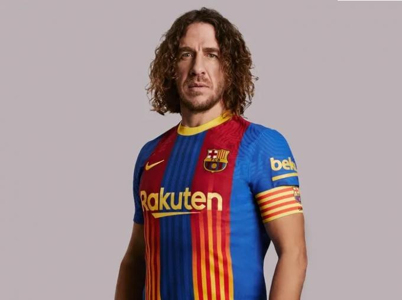
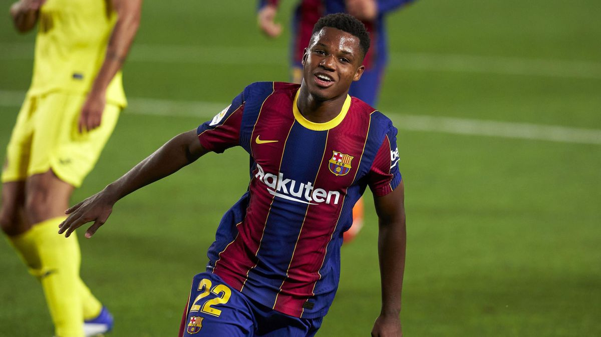
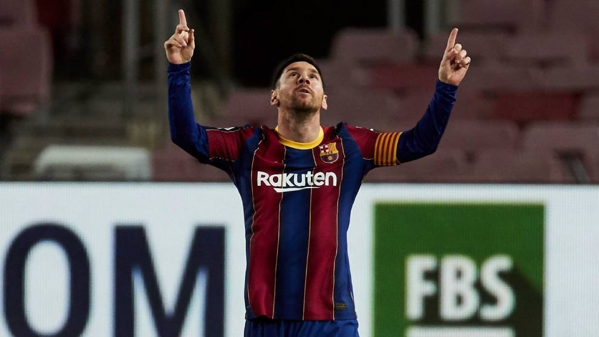
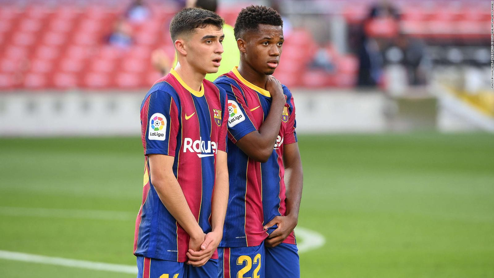
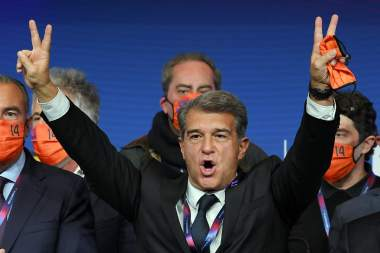
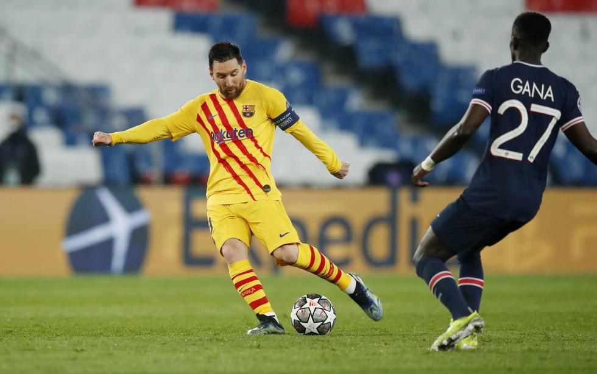
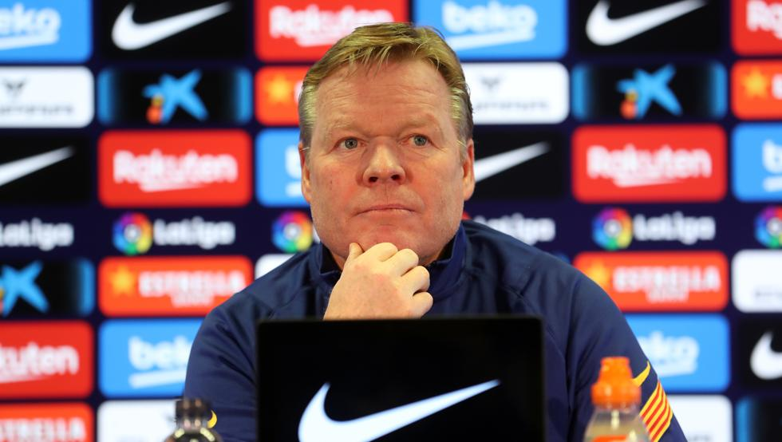
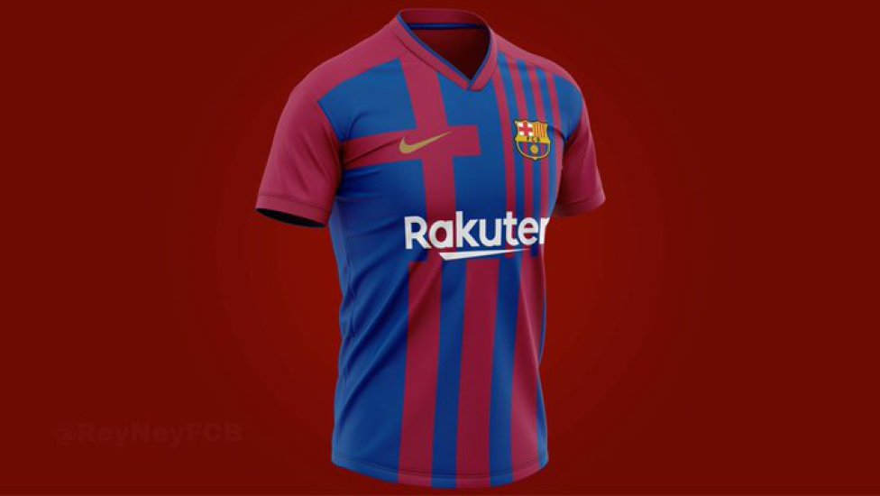
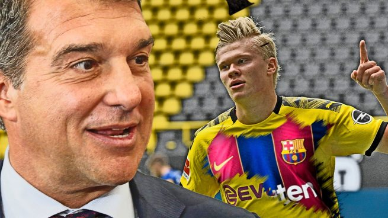

Noticias

El Barcelona estrenara nueva equipación en el clásico, con senyera incluida

Ansu Fati, candidato a deportista revelación en los premios Laureus

Leo Messi, mejor jugador del mes de febrero en La Liga

Koeman y su apuesta por seis jóvenes para una nueva generación en Barcelona

Joan Laporta es nuevo Presidente del FC Barcelona
Los seis fichajes de Laporta para devolver la grandeza al Barcelona

El Barça se despide de la Champions con la frente en alto

Koeman: "Todos los aficionados del Barça deben estar orgullosos de la imagen que hemos dado"

Se filtra la posible camiseta del Barça de la próxima temporada

Haaland, prioridad de Laporta y sueño del Barça
Síguenos en: